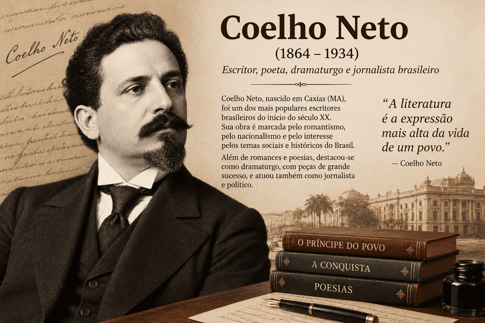

Coelho Neto: biografia, principais obras, estilo e recepção crítica
Henrique Maximiano Coelho Neto, conhecido como Coelho Neto, foi um escritor maranhense cuja trajetória permite compreender diferentes dimensões da vida literária brasileira entre o final do século XIX e as primeiras décadas do XX. Romancista, contista, cronista, dramaturgo e jornalista, participou também do ensino, da política e de instituições culturais.
Nascido em Caxias, Maranhão, em 21 de fevereiro de 1864, alcançou grande projeção nacional. Sua produção extensa circulou em livros e periódicos, colocando em contato a criação literária, o trabalho na imprensa e as expectativas de diferentes públicos.
A interpretação de sua obra exige considerar essa diversidade. O regionalismo de Sertão, a representação da vida intelectual em A Conquista e os conflitos da sociedade escravista em Rei Negro não podem ser explicados apenas por uma lista de características estilísticas. Cada obra organiza de maneira particular seus espaços, personagens e perspectivas narrativas.
A recepção de Coelho Neto também constitui um problema importante de história literária. O escritor celebrado em vida tornou-se alvo de críticas e perdeu centralidade nas narrativas posteriores sobre a literatura brasileira. Estudá-lo permite investigar como se modificam os critérios de reconhecimento e como os julgamentos sobre um estilo se relacionam com disputas entre projetos literários.

Coelho Neto em resumo
- Nome completo: Henrique Maximiano Coelho Neto.
- Nascimento: 21 de fevereiro de 1864, em Caxias, Maranhão.
- Falecimento: 28 de novembro de 1934, no Rio de Janeiro.
- Atuação: ficção, crônica, teatro, jornalismo, ensino e política.
- Contexto: passagem do século XIX para o XX, com intensa participação na vida intelectual da Primeira República.
- Obras de referência: Sertão, A Conquista, Rei Negro, A Capital Federal, Miragem e Turbilhão.
- Aspectos formais recorrentes: riqueza vocabular, elaboração descritiva, imagens sensoriais e atenção ao ritmo da prosa.
- Questões de estudo: regionalismo, memória, escravidão, vida intelectual e profissionalização da escrita.
- Recepção: consagração pública, contestação estética e posterior reavaliação crítica.
Formação e trajetória: entre o Maranhão e o Rio de Janeiro
Coelho Neto nasceu em Caxias e mudou-se com a família para o Rio de Janeiro ainda na infância. Sua formação e sua carreira se desenvolveram em diferentes ambientes, sem que a origem maranhense deixasse de integrar sua identidade literária.
Iniciou estudos de Medicina e de Direito, mas não concluiu esses cursos. Sua passagem pelo Recife incluiu o contato com Tobias Barreto. Ao retornar ao Rio, aproximou-se de José do Patrocínio e participou da campanha abolicionista, atuando em jornais ligados à vida política e intelectual do período.
Essa trajetória recomenda uma distinção importante: formação intelectual e titulação acadêmica não são equivalentes. A participação em redações, debates, redes de sociabilidade e instituições também constitui formas de aprendizado e de inserção no trabalho cultural.
Mais tarde, Coelho Neto exerceu funções docentes e cargos públicos. A passagem entre escrita, imprensa, ensino e política mostra que sua carreira se desenvolveu em uma rede de atividades, cuja análise ajuda a compreender as condições de produção literária de seu tempo.
Memória e elaboração literária
A relação entre origem regional e escrita não deve ser explicada como reprodução imediata de lembranças. Quando uma experiência se transforma em narrativa, passa por seleção, reorganização e construção de perspectiva.
Um espaço recordado pode adquirir intensidade afetiva, ser associado a uma tradição oral ou participar da criação de uma atmosfera. Assim, a presença do Maranhão na interpretação de Coelho Neto deve ser examinada por meio dos textos, sem transformar toda paisagem rural de sua obra em referência autobiográfica automática.
Imprensa e profissionalização da escrita
A atividade jornalística ocupa lugar decisivo na trajetória de Coelho Neto. A circulação em periódicos permite observar a escrita como trabalho contínuo, sujeito a prazos, espaços de publicação, relações profissionais e expectativas de leitura.
O jornal também aproxima modalidades diferentes de texto: comentário sobre acontecimentos, crônica, conto e narrativa publicada em partes podem compartilhar o mesmo suporte. Para o escritor, essa circulação envolve a necessidade de ajustar extensão, apresentação e ritmo a situações específicas.
A pesquisa sobre profissionalização literária ajuda a compreender essas condições sem reduzir a obra a um produto determinado mecanicamente pelo mercado. Exigências materiais e escolhas estéticas se relacionam, mas essa relação precisa ser demonstrada em cada caso.
O trabalho por trás da imagem do escritor
A figura pública de um autor frequentemente concentra a atenção no talento individual. Entretanto, a produção depende também de relações com editores, responsáveis por jornais, outros escritores e instituições que oferecem remuneração, espaço ou reconhecimento.
Essa perspectiva modifica a leitura da produtividade de Coelho Neto. A quantidade de textos publicados constitui um dado de sua carreira, mas não funciona como medida suficiente de qualidade ou de uniformidade. Uma obra extensa exige distinguir gêneros, fases, condições de circulação e resultados artísticos.
Como situar Coelho Neto na história literária?
Coelho Neto escreveu em um ambiente no qual conviviam diferentes tendências. Sua produção inclui observação social, elaboração de paisagens, imaginação fantástica, conflitos familiares e representação da vida intelectual. A variedade dificulta uma classificação única.
O termo ecletismo pode descrever essa diversidade, desde que não substitua a análise. Reconhecer que o escritor emprega recursos distintos é apenas o começo: é necessário compreender como eles se articulam em cada narrativa.
As afinidades com o Parnasianismo
A proximidade de Coelho Neto com autores parnasianos e a valorização do trabalho verbal ajudam a explicar sua associação ao ambiente do Parnasianismo. Contudo, esse movimento se define principalmente no campo da poesia, enquanto sua projeção está fortemente ligada à prosa.
Expressões como “prosa de elaboração parnasiana” podem indicar uma aproximação crítica, mas precisam explicitar seu alcance: atenção à forma, escolha vocabular, organização sonora ou construção de imagens. Nenhuma dessas propriedades, isoladamente, encerra o sentido de uma obra.
O problema da classificação como pré-modernista
O Pré-Modernismo é uma categoria retrospectiva utilizada para organizar parte da produção anterior à consolidação modernista. Não corresponde a uma escola de programa único, e a coincidência cronológica não implica identidade entre os projetos dos escritores.
Por isso, localizar Coelho Neto nesse período não significa apresentá-lo obrigatoriamente como alguém que preparou a ruptura de 1922. Sua trajetória permite perceber que as primeiras décadas do século XX abrigavam propostas concorrentes e critérios diferentes de legitimidade literária.
Distinção importante: escrever antes do Modernismo não equivale a antecipá-lo. A história literária se torna mais precisa quando considera os projetos existentes em seu próprio contexto, além de suas relações com movimentos posteriores.
O estilo de Coelho Neto: o que significa uma prosa ornamental?
A expressão ornamentalismo é frequentemente empregada para caracterizar sua escrita. Entretanto, ela pode assumir sentidos diferentes: nomear um investimento intenso na elaboração da frase ou formular um julgamento de excesso.
Para transformar a classificação em análise, é necessário identificar os procedimentos presentes no texto e discutir seus efeitos. Vocabulário raro, descrição extensa e adjetivação não possuem uma função fixa: podem intensificar uma atmosfera, estabelecer uma perspectiva ou interferir no desenvolvimento da ação.
Descrição e tempo narrativo
Ao descrever um ambiente, o narrador pode desacelerar o avanço dos acontecimentos e orientar a atenção para detalhes. A escolha do que se destaca — iluminação, ruído, textura, movimento ou disposição dos objetos — participa da maneira como o espaço será percebido.
Uma descrição, portanto, não se limita a informar onde a ação acontece. Pode preparar uma expectativa, tornar um lugar ameaçador ou sugerir a posição de quem observa. A análise deve verificar se os detalhes permanecem como cenário ou reaparecem na construção do conflito.
Adjetivação e julgamento
Adjetivos não apenas acrescentam propriedades. Também podem avaliar aquilo que descrevem. Um mesmo gesto pode parecer digno, ridículo ou inquietante conforme a escolha das palavras e o contexto de apresentação.
É necessário perguntar de quem parte essa avaliação: do narrador, de uma personagem ou de uma perspectiva que o texto posteriormente coloca em dúvida. A elaboração verbal participa, assim, da distribuição de simpatia, desconfiança e autoridade.
Vocabulário e ritmo da frase
O emprego de palavras pouco usuais pode ampliar a precisão de uma imagem e, ao mesmo tempo, aumentar a dificuldade de leitura. Já a extensão dos períodos, a pontuação e a distribuição dos termos modificam o ritmo da prosa.
Essas escolhas podem produzir encadeamento, acumulação ou suspensão. O importante é observar como a frase conduz a atenção: que informação retarda, que termo enfatiza e que relação estabelece entre as imagens.
Uma avaliação crítica consistente pode reconhecer a eficácia desses recursos em uma passagem e apontar seus limites em outra. Isso evita tanto a condenação antecipada do estilo quanto a suposição de que toda dificuldade corresponde necessariamente a um resultado expressivo bem-sucedido.
Sertão: espaço regional, crença e imaginação
Sertão, publicado em 1896, permite estudar uma vertente da produção de Coelho Neto vinculada a ambientes rurais e a formas de experiência afastadas do cotidiano da grande cidade. O volume inclui narrativas como “Praga”, “A tapera” e “Firmo, o vaqueiro”.
O título não deve levar à identificação automática com o sertão nordestino marcado exclusivamente pela seca. Na história cultural brasileira, a palavra “sertão” possui usos variados e pode designar espaços interiores em relação a diferentes centros de referência.
O regionalismo como construção de perspectiva
Uma narrativa regionalista seleciona costumes, relações, formas de falar e experiências que tornam um espaço reconhecível. Contudo, essa seleção depende de uma perspectiva. O narrador pode aproximar o leitor das personagens ou estabelecer distância, explicando suas práticas como se fossem estranhas.
Essa diferença é importante porque a representação de uma região pode valorizar experiências pouco conhecidas e também convertê-las em curiosidade para um público externo. O problema crítico consiste em investigar como o texto organiza essa relação.
Crença, explicação e incerteza
Nas leituras de narrativas atravessadas por mistério ou crenças, convém distinguir a existência de um relato sobre o extraordinário e sua confirmação pelo texto. Uma personagem pode atribuir determinado acontecimento a uma força sobrenatural sem que o narrador ofereça uma resposta definitiva.
A construção de atmosfera pode atuar justamente nesse intervalo: informações incompletas, percepções limitadas e interpretações divergentes dificultam a estabilização de uma explicação. A análise precisa acompanhar quem afirma cada versão e com que grau de certeza.
Oralidade e escrita literária
A presença de marcas de oralidade não transforma a narrativa em registro direto de uma fala coletiva. O texto escrito seleciona expressões, organiza pausas e constrói situações de transmissão.
Ao estudar esse aspecto, é produtivo observar quem conta uma história, a quem ela é contada e como essa situação interfere na credibilidade do relato. A oralidade pode participar da autoridade narrativa, da caracterização social e do efeito de proximidade com o leitor.
A Conquista: escritores, imprensa e memória de uma geração
A Conquista, de 1899, apresenta a vida literária como matéria de ficção. O romance mobiliza experiências de escritores e jornalistas ligados ao Rio de Janeiro e permite acompanhar o contato entre ambição artística, sociabilidade e dificuldades materiais.
A obra é frequentemente lida como um romance à chave, no qual personagens e situações remetem a pessoas e experiências reconhecíveis. Entretanto, identificar essas correspondências não esgota sua interpretação.
Ficção e experiência vivida
A transformação de uma experiência em romance envolve escolhas sobre o que narrar, como organizar os episódios e quais relações enfatizar. Mesmo quando existem referências biográficas, a obra não equivale a uma transcrição integral dos acontecimentos.
O leitor deve distinguir a utilidade histórica dessas referências e a lógica da composição. A pergunta “quem inspirou a personagem?” precisa ser acompanhada de outra: “que função essa personagem desempenha na narrativa?”.
A entrada no espaço público
O romance permite examinar o desejo de publicação e reconhecimento. A passagem de um texto privado para as páginas de um jornal altera sua circulação e pode funcionar como confirmação da identidade de escritor.
Esse reconhecimento, porém, depende de intermediários e relações. A carreira se constitui por encontros, avaliações e oportunidades, de modo que a conquista de um lugar literário aparece ligada à participação em um ambiente coletivo.
Boemia e condições de sobrevivência
A representação da boemia pode reunir liberdade, convivência e instabilidade. O interesse interpretativo está na relação entre essas dimensões: a disponibilidade para a criação e a sociabilidade convive com necessidades que impõem limites concretos.
Assim, a vida literária pode ser examinada como trabalho e como elaboração de uma imagem de grupo. O modo de recordar uma geração também seleciona suas experiências e contribui para definir o significado que ela atribui à própria trajetória.
Rei Negro: escravidão, autoridade e representação racial
Rei Negro, publicado em 1914, situa seu conflito no universo da escravidão. A personagem Macambira ocupa uma posição marcada pela tensão entre ascendência africana prestigiosa, reconhecimento dentro da fazenda e condição de homem escravizado.
Uma leitura inicial precisa distinguir o tempo da publicação e o tempo representado. O romance surge no Brasil posterior à abolição, mas sua ação permite revisitar relações de domínio da sociedade escravista.
A contradição da autoridade subordinada
Macambira exerce funções de confiança e autoridade, mas esse reconhecimento não elimina sua sujeição. A personagem permite interrogar a diferença entre ocupar uma posição relativamente favorecida e possuir liberdade.
Esse problema se torna especialmente significativo quando a autoridade de alguém depende de uma estrutura que também o subordina. A atuação de Macambira deve ser examinada em relação às demais personagens, sem convertê-lo antecipadamente em representante homogêneo de todos os escravizados.
Ancestralidade e dignidade
A associação da personagem a uma linhagem real africana oferece um caminho para discutir história e pertencimento. Ao mesmo tempo, a interpretação pode formular uma questão crítica: a dignidade de uma pessoa precisa ser sustentada por uma origem excepcional?
Essa pergunta ajuda a examinar os limites de uma valorização baseada na distinção. Reconhecer a complexidade de uma personagem não implica presumir que o romance abandone todas as hierarquias presentes no imaginário de seu tempo.
Masculinidade e critérios de julgamento
O estudo das masculinidades em Rei Negro permite investigar como força, autoridade, autocontrole e violência são distribuídos e avaliados. Importa observar quais comportamentos recebem aprovação e como essa avaliação se relaciona com as posições raciais e sociais.
A análise se aprofunda quando distingue a voz narrativa das falas das personagens e examina se os acontecimentos confirmam ou desestabilizam os julgamentos apresentados. Desse modo, a representação racial é compreendida como parte da organização do romance.
Leitura crítica: o engajamento abolicionista do escritor não dispensa a análise das escolhas de representação. Posição política, construção narrativa e efeitos de leitura são dimensões relacionadas, mas não equivalentes.
Outras obras e a diversidade da produção
Os títulos abaixo ajudam a visualizar a extensão de sua produção. Os anos seguem a bibliografia da Academia Brasileira de Letras e indicam referências de publicação, não necessariamente o momento de composição.
| Obra | Ano | Lugar no percurso de leitura |
|---|---|---|
| Rapsódias | 1891 | Produção inicial em conto. |
| A Capital Federal | 1893 | Romance para o estudo da representação urbana. |
| Miragem | 1895 | Amplia o conhecimento de sua produção romanesca. |
| Sertão | 1896 | Narrativas para o estudo do espaço regional. |
| Inverno em Flor | 1897 | Integra sua produção ficcional da década de 1890. |
| O Morto | 1898 | Oferece outro percurso de leitura de sua ficção. |
| A Conquista | 1899 | Representação da vida literária. |
| Turbilhão | 1906 | Amplia o estudo de seus romances do início do século XX. |
| Rei Negro | 1914 | Escravidão, autoridade e representação racial. |
Atenção à autoria: o romance A Capital Federal, de Coelho Neto, não é a burleta homônima de Artur Azevedo. A coincidência do título exige distinguir autor, gênero e data.
Prestígio público e mudança de recepção
Em 1928, Coelho Neto recebeu o título de “Príncipe dos Prosadores Brasileiros” em um concurso promovido por O Malho. O episódio mostra a permanência de seu reconhecimento em um momento no qual novas propostas literárias já disputavam espaço.
Essa coexistência é importante. A emergência de uma tendência estética não substitui imediatamente os hábitos de leitura, os repertórios de ensino e os critérios de prestígio. Públicos diferentes podem continuar valorizando autores e formas de escrita distintos.
A mudança de recepção, portanto, não deve ser narrada como um acontecimento instantâneo. É necessário distinguir reconhecimento contemporâneo, circulação editorial, avaliação crítica e presença posterior nos programas de estudo.
Lima Barreto e a função social da literatura
A crítica de Lima Barreto a Coelho Neto constitui um debate sobre a responsabilidade do escritor. Em “Literatura e política”, publicado em 1918, Barreto questiona a relação entre o prestígio do romancista, sua atuação pública e aquilo que considerava necessário ao trabalho intelectual.
A objeção envolve o investimento na elaboração verbal, mas também o uso dessa capacidade. Barreto cobra uma participação mais consequente nos problemas sociais e nas possibilidades de transformação de seu tempo.
Esse posicionamento deve ser apresentado como uma intervenção crítica situada, cuja leitura pode ser confrontada com as obras e a trajetória de Coelho Neto. Sua importância não depende de tratá-lo como diagnóstico definitivo de toda a produção do autor.
Precisão histórica: a crítica de Lima Barreto não deve ser identificada automaticamente com o Modernismo de 1922. Existem aproximações na contestação de valores literários, mas os autores, os contextos e os projetos precisam ser diferenciados.
Modernismo, linguagem e disputa de autoridade
A oposição modernista ao modelo associado a Coelho Neto envolvia uma discussão sobre o que poderia ser reconhecido como linguagem literária legítima. Valores de solenidade, erudição e acabamento verbal passaram a ser confrontados com propostas de renovação que ampliavam o lugar da oralidade, do cotidiano e da experimentação.
O debate ultrapassa uma escolha entre frases longas e curtas ou palavras raras e comuns. Está em questão a relação da literatura com seus leitores, com a experiência brasileira e com as instituições responsáveis pelo reconhecimento cultural.
Quando a historiografia posterior privilegia determinado projeto, pode transformar outros autores em exemplos negativos, citados principalmente para explicar aquilo que uma geração rejeitou. Nesse processo, o julgamento sobre um nome corre o risco de preceder a leitura efetiva dos textos.
O que significa reavaliar Coelho Neto?
Reavaliar um escritor exige retornar às obras com problemas definidos. No caso de Coelho Neto, isso envolve examinar a construção narrativa, a circulação na imprensa, as representações sociais e a diversidade de sua produção.
A investigação pode reconhecer resultados expressivos e também apontar limites: descrições que enfraquecem a progressão de uma passagem, personagens organizadas por estereótipos ou escolhas vocabulares cujo efeito não se sustenta. O importante é demonstrar a avaliação.
A história da recepção integra esse trabalho. Ao investigar por que um autor foi admirado e posteriormente contestado, o leitor também aprende a reconhecer os critérios que orientam seu próprio julgamento.
Como analisar um trecho de Coelho Neto?
- Identifique a perspectiva: reconheça quem narra e de que modo os acontecimentos são apresentados.
- Observe a descrição: verifique quais detalhes recebem destaque e como orientam a percepção do espaço.
- Examine as avaliações: procure palavras que atribuem qualidades morais ou sociais às personagens.
- Acompanhe o ritmo: perceba se a frase acelera, acumula informações ou suspende uma conclusão.
- Relacione forma e conflito: explique como esses recursos participam da situação narrada.
- Considere o contexto: utilize informações históricas para esclarecer o texto, sem substituir sua leitura.
Coelho Neto em questões de literatura
Para o estudo da literatura brasileira e maranhense, Coelho Neto permite relacionar linguagem, história cultural e recepção. Em uma questão com fragmento, porém, as características gerais do autor não dispensam a identificação dos recursos efetivamente presentes.
Se o enunciado destacar uma descrição, observe sua função; se abordar a recepção, diferencie a avaliação da obra e a posição do crítico; se apresentar uma representação racial, examine a perspectiva narrativa e as relações de poder.
Erros comuns ao estudar o autor
- Reduzir toda a produção ao ornamentalismo: uma característica recorrente não explica sozinha obras de gêneros e temas distintos.
- Confundir elaboração formal e ausência de assunto social: é necessário analisar como a forma representa o conflito.
- Aplicar uma escola literária de maneira automática: a classificação precisa ter seu alcance explicado.
- Tratar A Conquista como documento transparente: referências biográficas passam por elaboração ficcional.
- Confundir região representada e experiência direta do escritor: a construção do espaço envolve perspectiva e imaginação.
- Idealizar a representação em Rei Negro: a valorização da personagem não elimina suas contradições.
- Agrupar todos os críticos em uma mesma posição: Lima Barreto e os modernistas precisam ser contextualizados.
- Usar popularidade como prova suficiente de qualidade: circulação e avaliação estética são questões relacionadas, mas diferentes.
Síntese para revisão
Coelho Neto deve ser estudado a partir da articulação entre diversidade de obras, elaboração da linguagem, trabalho intelectual e história da recepção. Essa abordagem permite compreender sua importância sem transformar o prestígio de sua época ou a rejeição posterior em critérios absolutos.
Em Sertão, o foco pode recair sobre a construção do espaço e das perspectivas de interpretação; em A Conquista, sobre a elaboração da vida literária; em Rei Negro, sobre autoridade, liberdade e representação racial. A análise se torna consistente quando demonstra essas relações em passagens concretas.